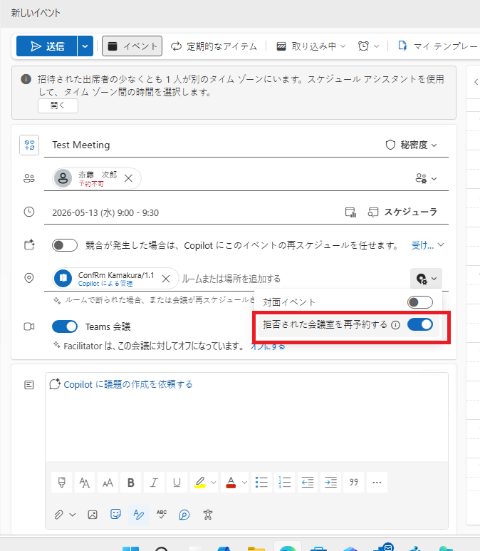
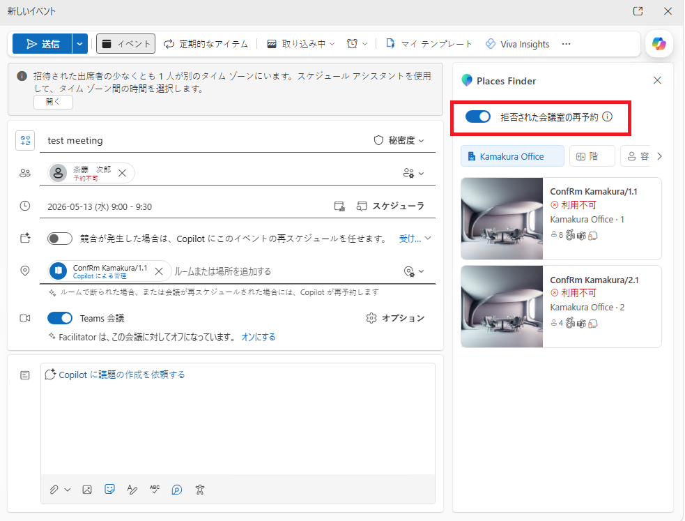
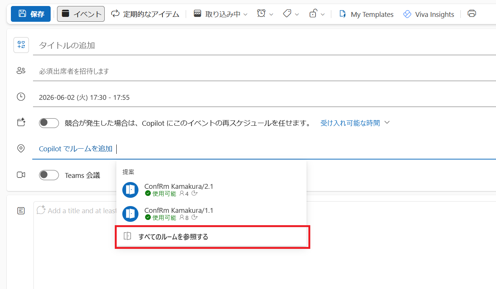
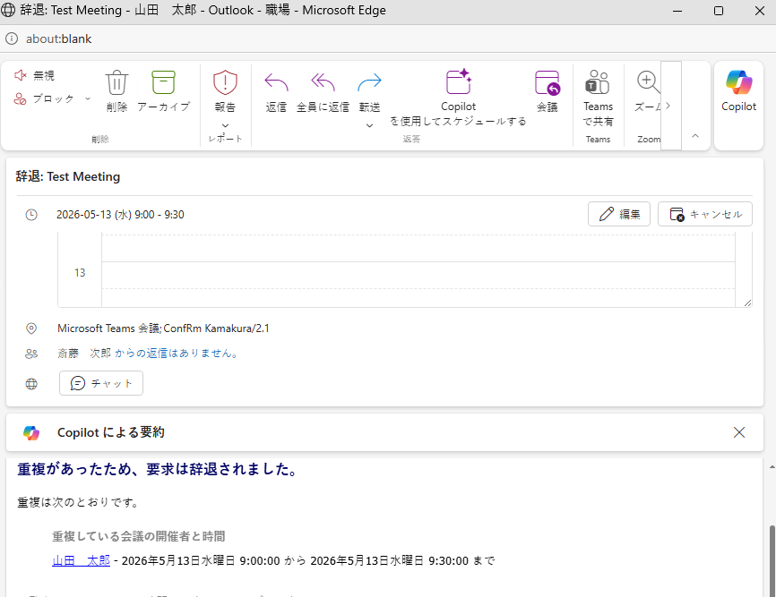
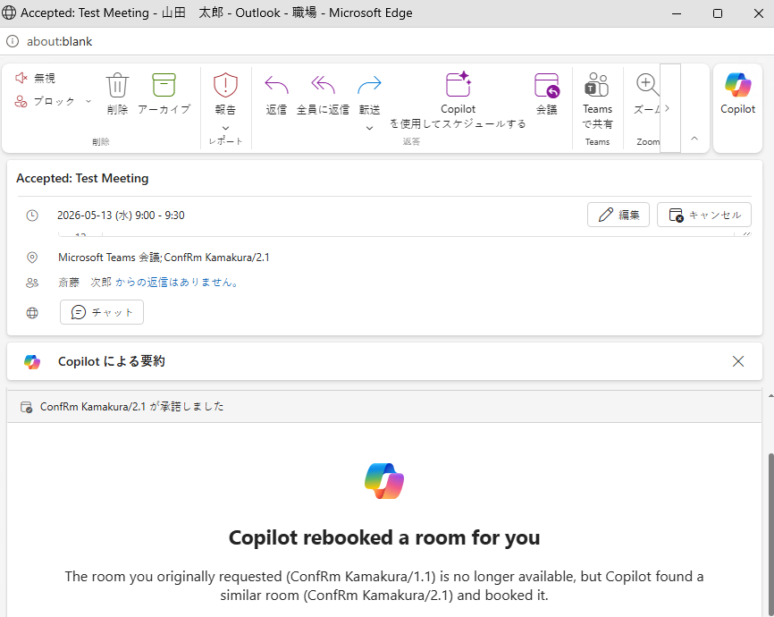
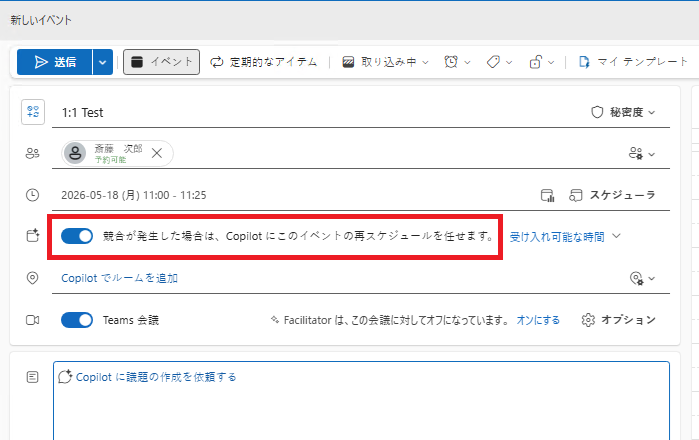
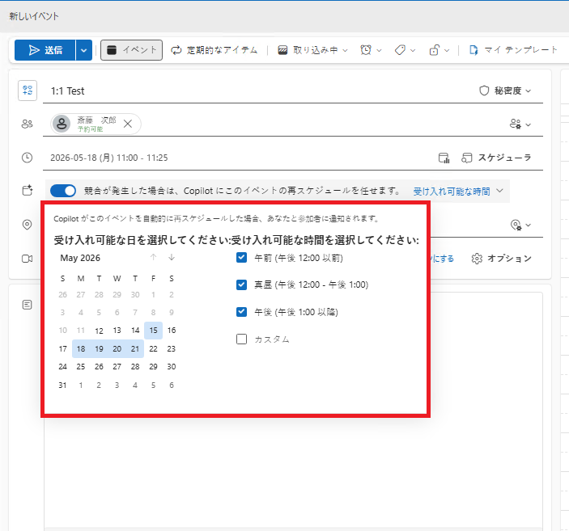
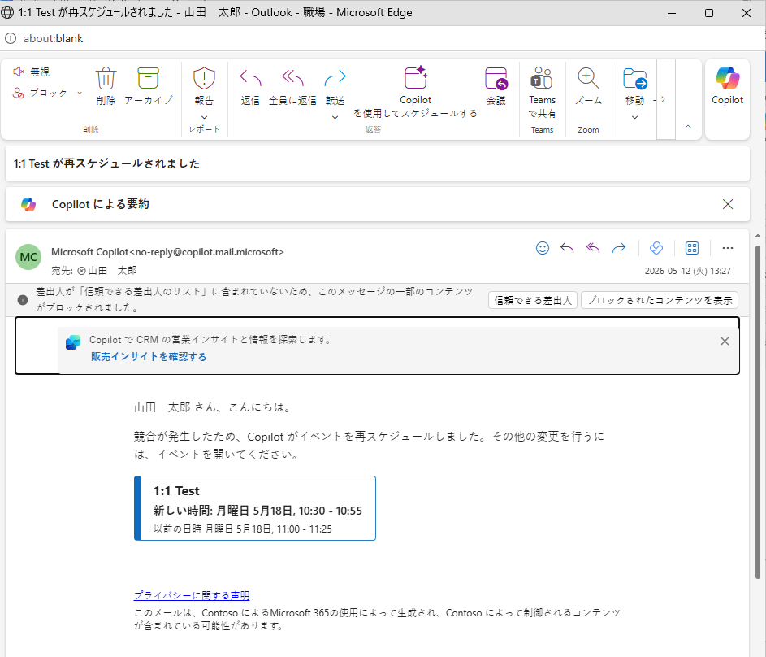
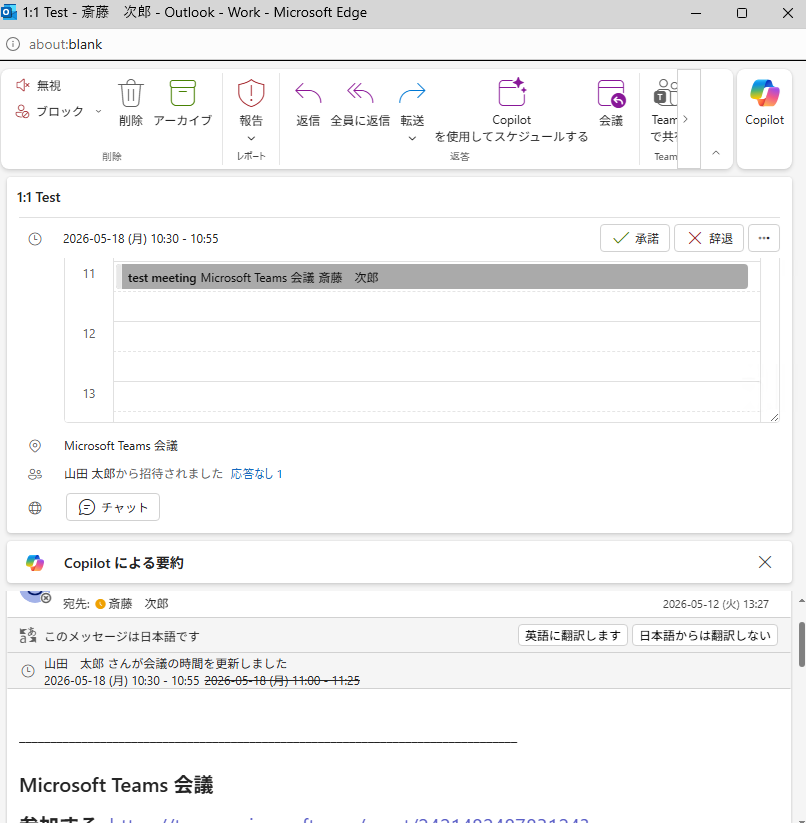
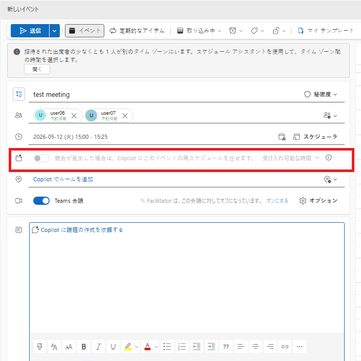

※ 本記事は 2026 年 6 月 3 日時点の情報をもとに作成しています。掲載内容は今後更新される可能性があります。
こんにちは。日本マイクロソフト Exchange & Outlook サポート チームの相場 (アイバ) です。
本記事では、会議予約の際に利用できる Copilot の機能である「会議室の再予約 (Rebook)」と「再スケジュール (Reschedule)」について説明します。
会議室の再予約 (Rebook) と再スケジュール (Reschedule) について
会議室の再予約 (Rebook) とは
会議室の予約ができなかった場合に自動的に別の会議室を Copilot が予約する機能です。
Microsoft 365 Copilot ライセンス (以下、Copilot ライセンス) を持つユーザーが新しい Outlook や Outlook on the web で利用できます。
再スケジュール (Reschedule) とは
予定の登録後、開催者の予定表に時間帯が重複する別の予定が登録された場合、Copilot が自動的に別の時間帯へ予定を移動する機能です。
Copilot ライセンスを持つユーザーが新しい Outlook や Outlook on the web で利用できます。
以降では、それぞれの動作について詳しく説明します。
会議室の再予約 (Rebook) の動作
設定方法
会議の作成画面で [拒否された会議室を再予約する] (または [拒否された会議室の再予約]) のチェックを ON にした上で会議室の予約を行います。(既定では本設定は OFF の状態です)
なお、本設定は以下の 2 か所にありますので、いずれかのチェックを ON にします。


※ 画面右の「Places Finder」の画面は会議室を指定する項目で [すべてのルームを参照する] をクリックすることで表示されます。

設定後の動作
予約しようとした会議室で既に同じ時間帯に別の予約が入っているなどの理由で予約ができなかった場合、会議の開催者は以下のような会議室予約の辞退メールを受け取ります。

その後、Copilot によって同じ時間帯に別の会議室の予約が行われ、以下の通知が開催者に送信されます。

もし他の会議室を自動で予約しないようにしたい場合は、 [拒否された会議室を再予約する] のチェックは OFF にした状態で会議室の予約を行う必要があります。
なお、[拒否された会議室を再予約する] の設定は既定で OFF の状態ですが、会議室を追加したタイミングで自動的に ON となる場合がありますので、この場合は会議室を追加した後に [拒否された会議室を再予約する] のチェックを OFF にしてください。
再スケジュール (Reschedule) の動作
設定方法
まず会議の作成画面にて [競合が発生した場合は、Copilot にこのイベントの再スケジュールを任せます。] のチェックを ON にします。

続けて、右に表示されている [受け入れ可能な時間] をクリックして、予定の移動を受け入れる期間を指定します。

設定後の動作
同じ時間帯に別の予定が登録されると自動的に再スケジュールを有効にした予定が別の時間に移動します。
会議の再スケジュールが行われた場合、Copilot により再スケジュールが行われたことを示す以下のメールを会議の開催者は受け取ります。

※ 再スケジュールが発生したことは画面右上の通知からも確認することができます。
また、会議の参加者に対しても会議の時間が変更されたことを示すメールが送信されます。


本情報の内容（添付文書、リンク先などを含む）は、作成日時点でのものであり、予告なく変更される場合があります。